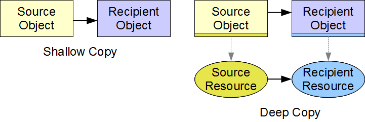

|
Software
Development |
 |
|
Part C - Encapsulation
Classes and Resources Design classes with dynamically allocated resources to model the components of a programming solution Define the copy constructor and assignment operator for a class with a resource "Never allocate more than one resource in a single statement" (Sutter, Alexandrescu, 2005) Resource Pointers | Deep Copies and Assignments | Copy ConstructorAssignment Operator | Localization | Copies Prohibited | Summary | Exercise In object-oriented programming, we design classes to behave independently of their client applications. Wherever client code dictates the amount of memory that an object requires, the memory that needs to be allocated is unknown at compile-time. Only once the client has instantiated the object will the object know how much memory the client requires. To review run-time memory allocation and deallocation see the chapter entitled Dynamic Memory. Memory that an object allocates at run-time represents a resource to its class. Management of this resource requires additional logic that was unnecessary in simpler designs. This additional logic ensures proper handling of the resource and is often called deep copying and deep assignment. This chapter describes how to implement deep copying and deep assignment logic. The member functions that manage resources are the constructors, the assignment operator and the destructor. Resource Instance Pointers A C++ object refers to a resource through a resource instance pointer. This pointer holds the address of the resource. The address lies outside the object's static memory. Case Study Let us upgrade our Student class to accommodate a variable number of grades. The client code specifies the number at run-time. The array of grades is now a dynamically allocated resource. We allocate
In this section, we focus on the constructors and the destructor for our Student class. Let us assume that the client does not copy or assign objects of this class. We shall cover the copying and assignment logic in subsequent sections:
The no-argument constructor places the object in a safe empty state. The three-argument constructor allocates dynamic memory for the resource only if the data received is valid. The pre-initialization of grade is a precaution that ensures no inadvertent destruction of memory (see the assignment operator section below). The destructor deallocates any memory that the constructor allocated. Deallocating memory at the nullptr address has no effect. Deep Copies and Assignments In designing a class with a resource, we expect the resource associated with one object to be independent of the resource associated with another object. That is, if we change the resource data in one object, we expect the resource data in the other object to remain unchanged. In copying and assigning objects we ensure resource independence through deep copying and deep assigning. Deep copying and deep assigning involve copying the resource data. Shallow copying and assigning involve copying the instance variables only and are only appropriate for non-resource instance variables. Implementing deep copying and assigning requires dynamic allocation and deallocation of memory. The copying process includes not only the non-resource instance variables but also the resource data itself.  In each deep copy, we allocate memory for the underlying resource and copy the contents of the source resource into the destination memory. We shallow copy the instance variables that are NOT resource instance variables. For example, in our Student class, we shallow copy the student number and number of grades, but not the address stored in the grade pointer. Two special member functions manage allocations and deallocations associated with deep copying and deep copy assigning:
If we do not declare a copy constructor, the compiler inserts code that implements a shallow copy. If we do not declare a copy assignment operator, the compiler inserts code that implements a shallow assignment. Copy Constructor The copy constructor contains the logic for copying from a source object to a newly created object of the same type. The compiler calls this constructor when the client code
Declaration The declaration of a copy constructor takes the form Type(const Type&); where Type is the name of the class. To define a copy constructor, we insert its declaration into the class. For example, we insert the following into the definition of our Student class:
Definition The definition of a copy constructor contains logic to
For example, the following code implements a deep copy on objects of our Student class:
Since the source data was validated on its original receipt from the client code and privacy constraints have ensured that this data has not been corrupted in the interim, we do not need to revalidate the data in the copy constructor logic. Copy Assignment Operator The copy assignment operator contains the logic for copying data from an existing object to an existing object. The compiler calls this member operator whenever for client code expressions of the form identifier = identifier identifier refers to the name of an object. Declaration The declaration of an assignment operator takes the form Type& operator=(const Type&); the left Type is the return type and the right Type is the type of the source operand. To define the copy assignment operator, we insert its declaration into the class definition. For example, we insert the following declaration into the definition of our Student class:
Definition The definition of the copy assignment operator contains logic to:
For example, the following code performs a deep copy assignment on objects of our Student class:
To trap a self-assignment from the client code (a = a), we compare the address of the current object to the address of the source object. If the addresses match, we skip the assignment logic altogether. If we neglect to check for self-assignment, the deallocation statement would release the memory holding the resource data and we would lose access to the source resource resulting in our logic failing at grade[i] = source.grade[i]. Localization The code in our definition of the copy constructor is identical to most of the code in our definition of the assignment operator. To avoid such duplication and thereby improve maintainability we can localize the logic in a:
Private Member Function The following solution localizes the common code in a private member function named init() and calls this function from the copy constructor and the copy assignment operator:
Direct Call The following solution initializes the resource instance variable in the copy constructor to nullptr and calls the copy assignment operator directly:
Assigning grade to nullptr in the copy constructor ensures that the assignment operator does not deallocate any memory if called by the copy constructor. Assigning Temporary Objects Assigning a temporary object to the current object requires additional code if the object manages resources. To prevent the assignment operator from releasing not-as-yet-acquired resources we initialize each resource instance variable to an empty value (nullptr). For example, in the constructors for our Student object, we add the highlighted code:
Copies Prohibited Certain class designs require prohibiting client code from copying or copy assigning any instance of a class. To prohibit copying and/or copy assigning, we declare the copy constructor and/or the copy assignment operator as deleted members of our class:
The keyword delete used in this context has no relation to deallocating dynamic memory. Summary
Exercises
|
| |
Top |
| Next: Helper Functions
|
| Designed by Chris Szalwinski | Copying From This Site |